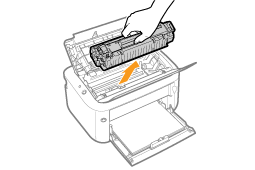
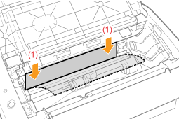
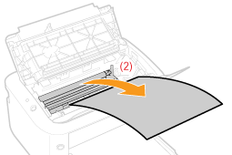
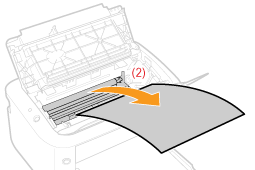

|
Se "Observera (Pappersstopp)" innan du åtgärdar ett pappersstopp.
|
Om ett pappersstopp uppstår visas ett meddelande i skrivarstatusfönstret.
 Om skrivarstatusfönstret inte öppnas Om skrivarstatusfönstret inte öppnas |
 "
"Hur du åtgärdar pappersstopp
Se till att göra följande för att ta bort papperet som fastnat.
1
Håll i öppningen (A) på höger sida och öppna den översta luckan.
 |
Dra inte ut papperet som fastnat även om du kan se det, utan ta bort det på följande sätt:
|

2
Ta bort tonerkassetten.
Placera omedelbart den borttagna tonerkassetten i den ursprungliga skyddspåsen eller slå in den i en tjock trasa.
|
|
Mer information om hur du hanterar tonerkassetter finns i "Observera (Tonerkassett)".
|

3
Ta bort papper som fastnat.
Om papperet sitter fast i utmatningsområdet eller inuti skrivaren
|
(1)
|
Håll i båda papperets ändar och dra det sedan sakta nedåt.
|
|
(2)
|
Ta bort papperet genom att försiktigt dra ut det.
|
 

Om papperet sitter fast i papperskällan
Ta bort papperet genom att försiktigt dra ut det.

4
Sätt i tonerkassetten.
Skjut in tonerkassetten ordentligt ända till bakkanten av skrivaren och passa samtidigt in (A) på båda sidorna av tonerkassetten mot tonerkassettguiderna.
5
Stäng den översta luckan.
|
→
|
Meddelandet som anger pappersstopp försvinner och skrivaren är klar att skriva ut.
|
|
Om du inte kan stänga den översta luckan Kontrollera att tonerkassetten sitter på rätt sätt i skrivaren. Använd inte för stor kraft för att stänga den översta luckan, då det kan orsaka skador på skrivaren.
|